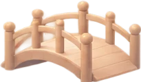
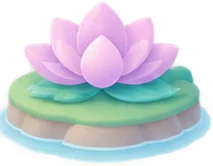
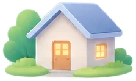
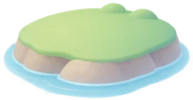
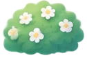
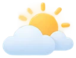
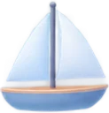

A · One calm sea My pick
Your worldWorldInsights
+ New island

Body 



Health


Me


One scene, nothing floating. Islands sit along one sea route, smaller toward the horizon. The name is right under each island, with its weather inside. Bridges, the boat and pieces live on the route or on the islands. The globe opens from a small button.
B · Island cards
Your worldWorldInsights
Me
2 hard days this week · calmer
6 questions↔ Health
Health
5 hard days this week · as usual
6 questions1 action point
Body & habits
Calm week
5 questions
+ New island
The clearest to read. One card per island: its week in words, its questions, its action points, who it's linked with. The world is a small picture on top. Less of a “world to explore”.
C · Islands on a route
Your worldWorldInsights
Me· 2 hard days
Health· 5 hard days
Body· calm
+ New island
The same language as Today. Islands sit on one route like steps, labels always on the other side, bridges on the route. Tidy and easy to scan, but more like a list than a free world.